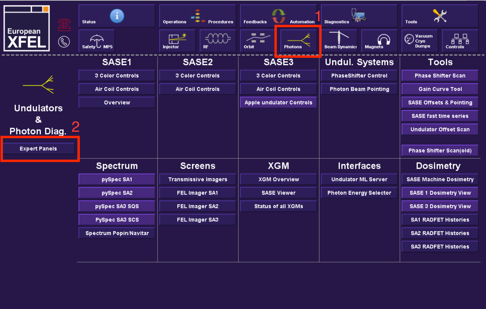
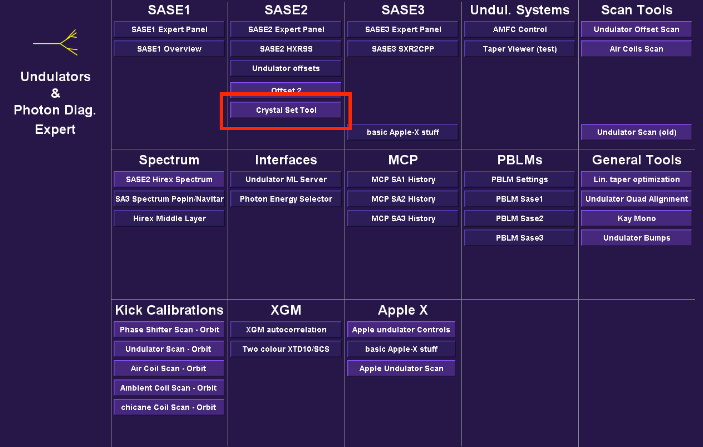
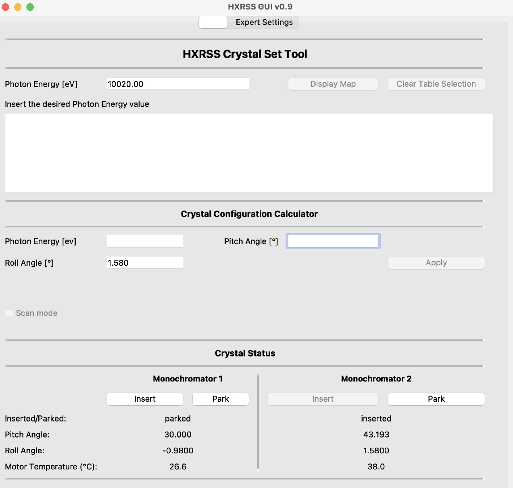
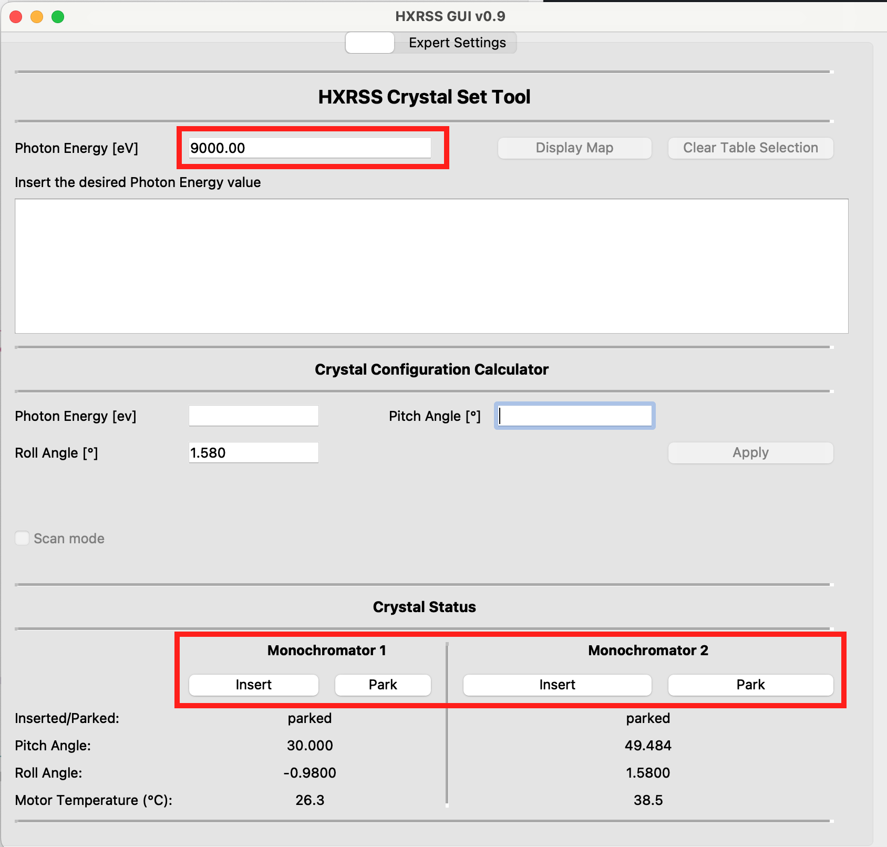
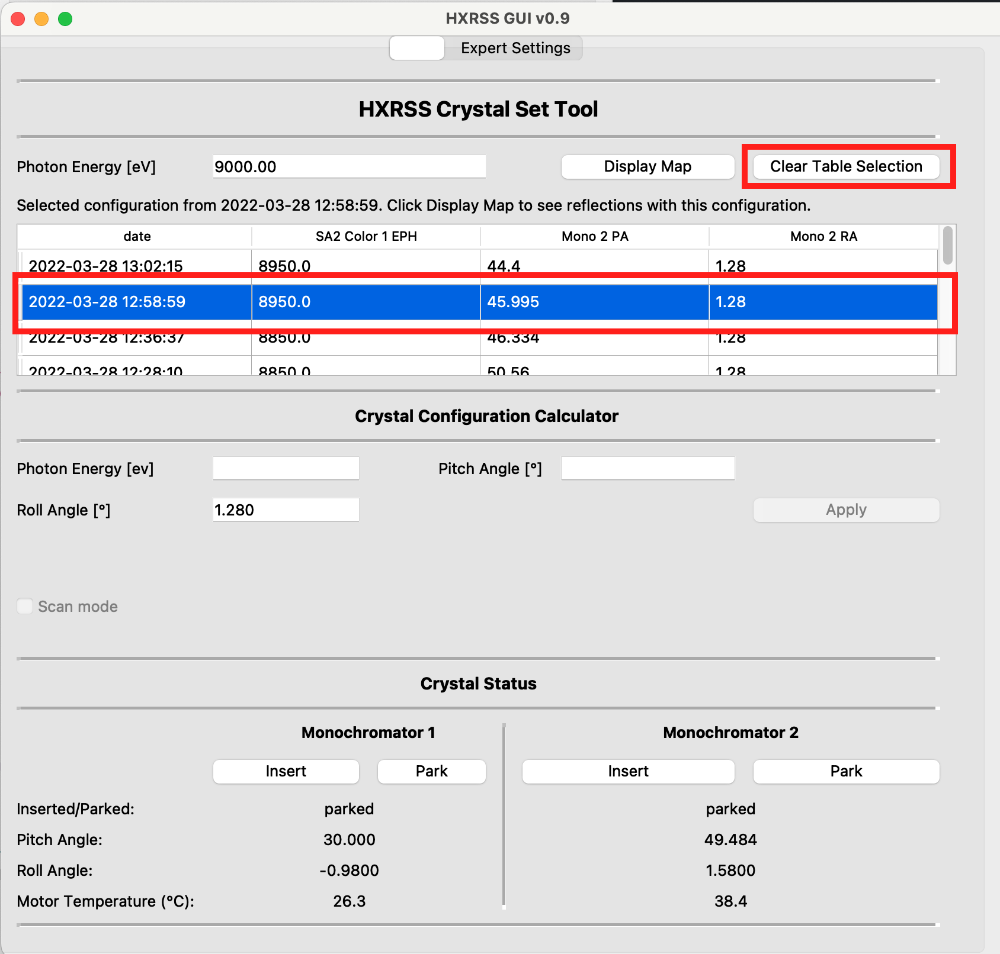
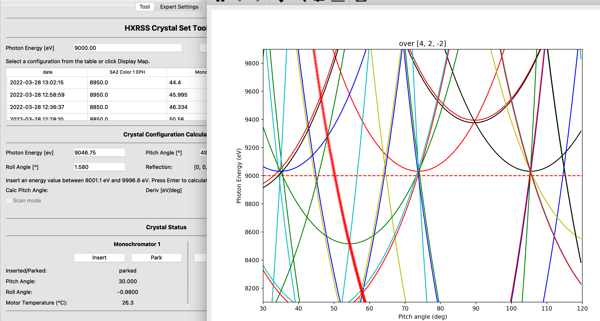
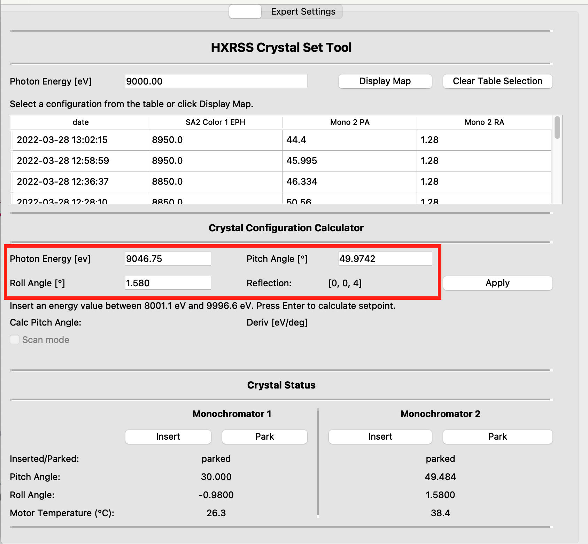
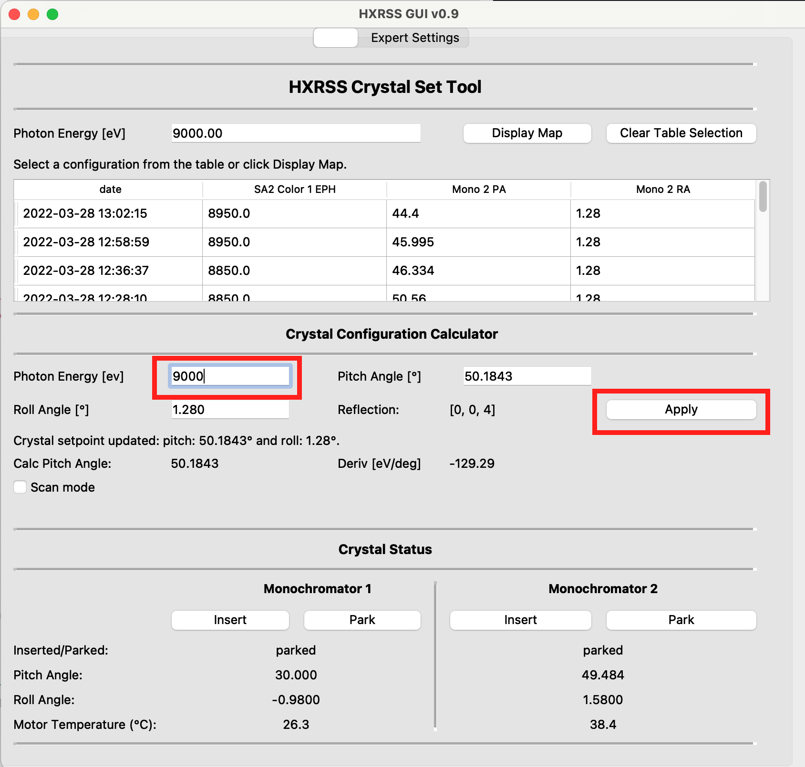
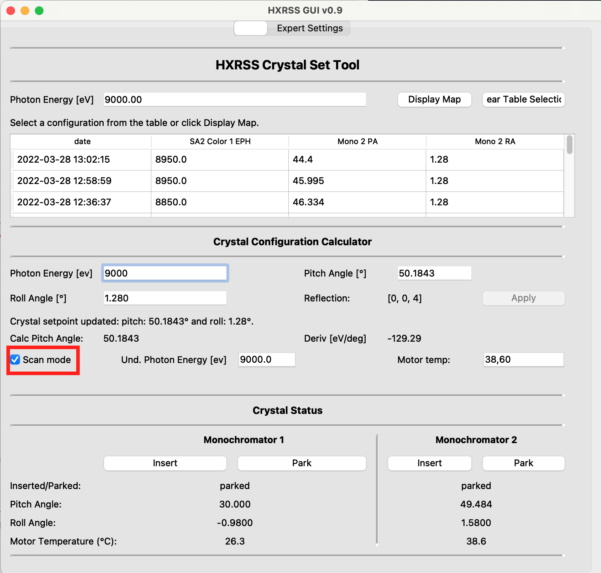

Blue Week Update: HXRSS Energy Scans
FEL R&D meeting, 28.09.2022
Christian Grech, on behalf of HXRSS op team
Agenda
- Goals
- HXRSS Energy Scan Procedure
- Blue week tests
- Outcomes
Goals
- Increase/decrease undulator energy in step sizes that could be as low as 0.5 eV.
- Maintain a self-seeded signal on a specific reflection over a range of ~ 100 eV.
- Crystal model calculates a new pitch angle based on the difference in energy noted.
- The new pitch angle is pushed as the new crystal setpoint.
HXRSS Energy Scan Procedure
Procedure
Undulator Control Python Script
Crystal Set Tool: Scan Feature
Monochromator Crystal
Undulator Photon Energy Control script
Script in /home/xfeloper/user/chgrech/hxrss/scripts
>>> python und_energy_program.py
--start_en 10000 # Col 1 start energy in eV
--step 10 # Step size in eV
--no_steps 10 # Number of steps
--pause 100 # Pause time in seconds
--colors 1,3 # Color
Crystal Set Tool in BKR



Setting up Scan Mode






Detailed manual is on the HXRSS Confluence page
Summary of scans on 10.09.22
- HXRSS setup at 12.4 keV.
- Increments of 0.5 eV with 10 second pauses.
- Increasing pause time to 100 s.
- Decreasing steps over 100 eV.
- Total durations ranging between 10 - 30 minutes.
Outcomes
- A script synchronously adjusts multiple colors.
- The scan feature is able to pick up changes in photon energy and calculate new crystal pitch angles.
- The crystal set tool continously updates the crystal setpoint.
- Limitations include maintaining a pause ~ 1 min between steps.
- Collaboration with users on the tool's integration with their DAQ.